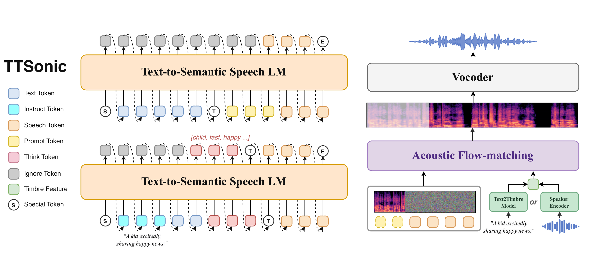
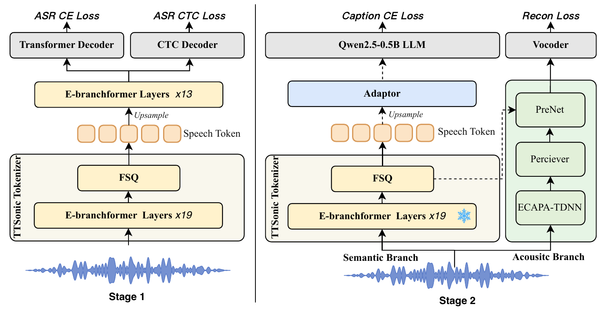

Technical Report Demo
TTSonic
A unified speech generation model that disentangles semantic and prosodic speech tokens from speaker timbre embeddings.
Paper
Abstract
Modern text-to-speech (TTS) systems can synthesize natural and expressive speech, yet a practical speech foundation model must go beyond naturalness to offer stable quality, precise controllability, and a broad set of composable capabilities within a single framework.
We present TTSonic, a unified speech generation model that supports zero-shot TTS, voice cloning, prosody cloning, controllable cloning, text-guided voice design, and voice conversion within a single framework. TTSonic couples a semantic speech tokenizer, a text-to-semantic autoregressive language model, and an acoustic flow-matching model.
The tokenizer is trained with ASR supervision and a late FSQ bottleneck so that its discrete tokens preserve semantic and prosodic information while being disentangled from speaker timbre; the language model then performs semantic and prosodic planning from text and optional natural-language instructions, and the flow-matching model renders speech conditioned on either reference audio or a text-described timbre.
Building on this design, we further improve robustness, controllability, and voice diversity through RL post-training tailored to TTS and instruction following, chain-of-thought-guided style planning, and Text2Timbre voice design. Experiments show that TTSonic achieves state-of-the-art or competitive TTS and instruction-following performance with a compact 0.5B backbone, and obtains further gains from model scaling and post-training.
Architecture
Method Overview


Audio Codec
Codec Demo
Codec tokens remove much of the original background information and can be decoded by flow matching for enhancement and voice conversion.
Generation
TTS Demo
TTSonic combines semantic/prosodic planning with independent timbre control for cloning, prosody transfer, voice design, and instruction following.